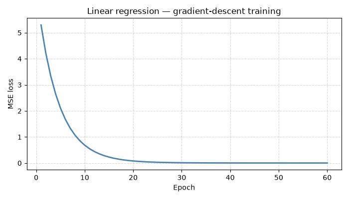
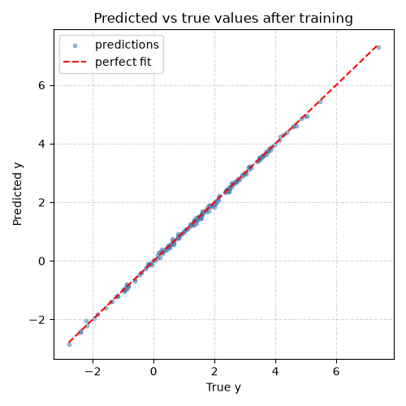

Note
Go to the end to download the full example code.
Gradient and training loop for linear regression#
This example shows how to use onnx_light.onnx_core.gradient to:
Build a simple linear-regression forward model as a list of ONNX nodes.
Compute its gradient with respect to the trainable parameters (weights and bias) using
gradient_of_nodes().Run a plain gradient-descent training loop entirely in NumPy — the gradient FunctionProto tells which ONNX operations to execute backward, but the numerical evaluation is done by hand here to keep the example self-contained.
The model is y = X @ W + b where X is the feature matrix (shape
[N, F]), W is the weight vector (shape [F, 1]), and b is a
scalar bias. The loss is the mean-squared error (MSE)
L = mean((y_pred - y_true) ** 2).
Analytical gradients#
For the MSE loss L and prediction y_pred = X @ W + b:
dL/dW = (2/N) * X.T @ (y_pred - y_true)dL/db = (2/N) * sum(y_pred - y_true)
The gradient FunctionProto produced by
gradient_of_nodes() captures exactly this
backward computation as a reusable ONNX function.
from __future__ import annotations
import numpy as np
Build the forward graph#
The forward pass y = X @ W + b is expressed as two ONNX nodes: a
MatMul followed by an Add.
from onnx_light.onnx_proto._helper import make_node # noqa: E402
forward_nodes = [
make_node("MatMul", ["X", "W"], ["mm"]),
make_node("Add", ["mm", "b"], ["y_pred"]),
]
print("Forward nodes:")
for n in forward_nodes:
print(f" {n.op_type}({list(n.input)}) -> {list(n.output)}")
Forward nodes:
MatMul(['X', 'W']) -> ['mm']
Add(['mm', 'b']) -> ['y_pred']
Compute the gradient FunctionProto#
gradient_of_nodes() performs reverse-mode
automatic differentiation over the forward nodes and returns a
FunctionProto that encodes the
backward computation.
xs— parameters to differentiate with respect to (Wandb).y— the scalar (or tensor) output whose gradient is propagated back.zs— non-differentiable inputs (the feature matrixX).
from onnx_light.onnx_core.gradient import gradient_of_nodes # noqa: E402
grad_fn = gradient_of_nodes(
nodes=forward_nodes,
inputs=["X", "W", "b"],
initializers=[],
xs=["W", "b"],
y="y_pred",
zs=["X"],
)
print("\nGradient FunctionProto:")
print(f" inputs = {list(grad_fn.input)}")
print(f" outputs = {list(grad_fn.output)}")
print(f" nodes = {[str(n.op_type) for n in grad_fn.node]}")
Gradient FunctionProto:
inputs = ['W', 'b', 'X', 'dy']
outputs = ['grad_W', 'grad_b']
nodes = ['Transpose', 'MatMul', 'Transpose', 'MatMul', 'Identity', 'Identity']
Training loop with NumPy#
The gradient FunctionProto describes the backward pass symbolically. To actually train, we evaluate the analytical gradients in NumPy. A real training framework would execute the FunctionProto directly; here we use the NumPy equivalents to keep the example dependency-free.
# Reproducible random seed
rng = np.random.default_rng(42)
# --- Synthetic dataset ---
N, F = 200, 4 # 200 samples, 4 features
W_true = rng.standard_normal((F, 1)).astype(np.float32)
b_true = np.float32(1.5)
X_data = rng.standard_normal((N, F)).astype(np.float32)
y_data = X_data @ W_true + b_true + 0.05 * rng.standard_normal((N, 1)).astype(np.float32)
# --- Initialize parameters ---
W = rng.standard_normal((F, 1)).astype(np.float32) * 0.1
b = np.float32(0.0)
learning_rate = 0.05
n_epochs = 60
loss_history: list[float] = []
for _epoch in range(n_epochs):
# Forward pass
y_pred = X_data @ W + b # shape [N, 1]
residual = y_pred - y_data # shape [N, 1]
loss = float(np.mean(residual**2))
loss_history.append(loss)
# Backward pass (MSE loss: dL/dy_pred = 2 * residual / N)
dy = (2.0 / N) * residual # shape [N, 1]
# Gradient of y_pred = X @ W + b
# dL/dW = X.T @ dy (shape [F, 1])
# dL/db = sum(dy) (scalar)
grad_W = X_data.T @ dy
grad_b = float(np.sum(dy))
# Gradient-descent update
W -= learning_rate * grad_W
b -= learning_rate * grad_b
print(f"\nTraining summary (lr={learning_rate}, epochs={n_epochs}):")
print(f" Initial loss : {loss_history[0]:.4f}")
print(f" Final loss : {loss_history[-1]:.6f}")
print(f" Learned W : {W.ravel()}")
print(f" True W : {W_true.ravel()}")
print(f" Learned b : {b:.4f} (true: {b_true:.4f})")
Training summary (lr=0.05, epochs=60):
Initial loss : 5.2952
Final loss : 0.002554
Learned W : [ 0.30281866 -1.0434434 0.75531673 0.93419707]
True W : [ 0.3047171 -1.0399841 0.7504512 0.9405647]
Learned b : 1.4949 (true: 1.5000)
Plot — loss curve#
import matplotlib.pyplot as plt # noqa: E402
fig, ax = plt.subplots(figsize=(7, 4))
ax.plot(range(1, n_epochs + 1), loss_history, linewidth=2, color="steelblue")
ax.set_xlabel("Epoch")
ax.set_ylabel("MSE loss")
ax.set_title("Linear regression — gradient-descent training")
ax.grid(True, linestyle="--", alpha=0.5)
fig.tight_layout()
fig.savefig("plot_gradient_linear_regression.png")

Plot — predicted vs true values#
y_final = X_data @ W + b
fig2, ax2 = plt.subplots(figsize=(5, 5))
ax2.scatter(y_data, y_final, s=10, alpha=0.5, color="steelblue", label="predictions")
lims = [float(y_data.min()), float(y_data.max())]
ax2.plot(lims, lims, "r--", linewidth=1.5, label="perfect fit")
ax2.set_xlabel("True y")
ax2.set_ylabel("Predicted y")
ax2.set_title("Predicted vs true values after training")
ax2.legend()
ax2.grid(True, linestyle="--", alpha=0.5)
fig2.tight_layout()
fig2.savefig("plot_gradient_linear_regression_scatter.png")

Total running time of the script: (0 minutes 0.329 seconds)
Related examples
Gallery generated by Sphinx-Gallery
Example last updated
- Date:
2026-09-03